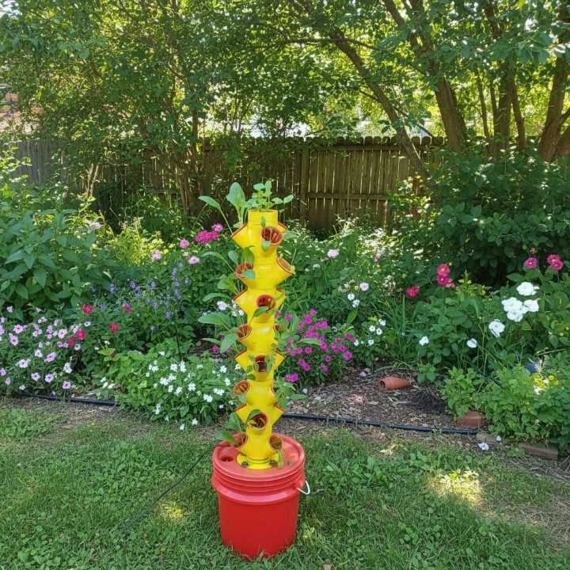

Tu huerto.
Tu independencia.
Tu futuro.
Cultivá alimentos frescos en casa sin tierra, sin pesticidas y con hasta 90% menos agua. Sistemas modulares fabricados con precisión 3D, diseñados para que cualquier rincón de tu hogar florezca.

¿Sabés de dónde vienen realmente tus alimentos?
Kilómetros de transporte, semanas de almacenamiento, pesticidas acumulados y un costo que crece cada mes. La agricultura industrial nos alejó de algo fundamental: saber qué comemos y de dónde viene.
Pero hay una forma mejor.
Tu propio huerto, sin esfuerzo, sin tierra, sin excusas.
Las torres hidropónicas de JyJ son sistemas automáticos que nutren tus plantas con agua enriquecida, circulación inteligente y el mínimo cuidado de tu parte.
- ✓ Fácil de armar y mantener
- ✓ Sin experiencia previa necesaria
- ✓ Cosecha sin ensuciarte
- ✓ Funciona en balcones, cocinas, patios
Elegí tu sistema y empezá hoy
Tecnología hidropónica diseñada para producir todo el año.
Precio exclusivo abonando por transferencia bancaria.

Sistema Completo 12 Plantas
Tu primer paso hacia la autonomía alimentaria. Perfecto para tener siempre a mano hierbas frescas, lechugas y verduras de hoja verde sin ocupar espacio.

Sistema Completo 24 Plantas
Producción seria para familias. Con este sistema lográs un rendimiento constante que complementa significativamente tu compra semanal de verduras frescas.

Torre Vertical 24 Plantas
Estructura vertical con 24 canastos incluidos. Solo torre y canastos, no incluye bomba ni demás componentes. Ideal para quienes ya tienen accesorios o buscan armar un sistema a medida en espacios reducidos.
Tecnología que trabaja mientras vos descansás
El Sistema Vertical Automático JyJ Modular gestiona solo la circulación de la solución nutritiva. Vos solo cosechás.

Ensamblado modular
Piezas diseñadas para encajar perfectamente. Sin herramientas especiales, sin complicaciones.
Circulación automática
La bomba hace circular la solución nutritiva de forma continua, alimentando cada raíz.
Crecimiento acelerado
Las plantas reciben exactamente lo que necesitan, creciendo hasta 3 veces más rápido.
Fácil de limpiar y escalar
Módulos desmontables. Empezá chico y crecé a tu ritmo.
Mirá lo facíl que es →
Todo lo que necesitás en un solo sistema
90% menos agua
Nuestros sistemas reutilizan el agua en ciclo cerrado. Cultivás más gastando mucho menos.
Cualquier espacio
Balcón, cocina, patio, interior. Si hay luz, hay lugar para un huerto JyJ.
Sin pesticidas
Controlás exactamente qué le das a tus plantas. Sin químicos, sin dudas.
Todo el año
Sin estaciones, sin clima. Donde y cuando quieras.
Soporte personalizado
Te acompañamos desde el primer día. Asesoramiento real, no un manual de PDF.
Envíos a todo el país
Estés donde estés en Argentina, tu sistema llega hasta tu puerta.
Argentinos, apasionados por el cultivo inteligente
JyJ Hidroponía nació en Misiones con una convicción: que cultivar tus propios alimentos no debería ser complicado ni caro. Combinamos formación en ciencias agrarias, tecnología de impresión 3D y años de investigación para crear sistemas que realmente funcionan.
Cada torre que fabricamos es un producto de diseño y precisión local, pensado para durar, crecer y transformar tu relación con la comida.
Misión
Facilitar el acceso a cultivo hidropónico accesible, sostenible y de bajo impacto ambiental para cada hogar argentino.
Visión
Ser la empresa líder en hidroponía doméstica en Argentina, reconocidos por innovación y compromiso real con la sustentabilidad.
Todo lo que querés saber antes de empezar
La hidroponía es el cultivo de plantas sin suelo. Las raíces se alimentan directamente de una solución nutritiva en agua, lo que permite un crecimiento más eficiente, más rápido y completamente controlado.
Prácticamente cualquiera: lechugas, espinacas, albahaca, perejil, tomates cherry, fresas, flores ornamentales y mucho más. Algunos cultivos requieren sistemas específicos que también ofrecemos.
No. Nuestros sistemas están diseñados para ser manejados por cualquier persona sin experiencia previa. Solo necesitás agua y nutrientes. Te acompañamos en todo el proceso de configuración.
A todo el territorio argentino. Consultanos por WhatsApp para coordinar el envío a tu localidad.
Asesoramiento personalizado por WhatsApp: configuración del sistema, selección de plantas, control de nutrientes, manejo de plagas y optimización del rendimiento.
¿Listo para cultivar tu propio futuro?
Contactanos y un especialista te ayuda a elegir el sistema perfecto para tu espacio.